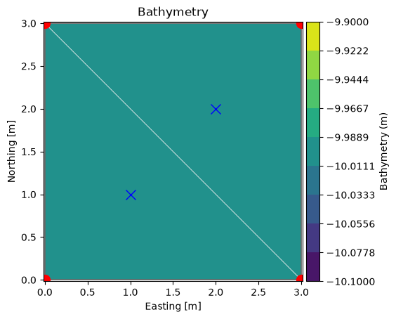
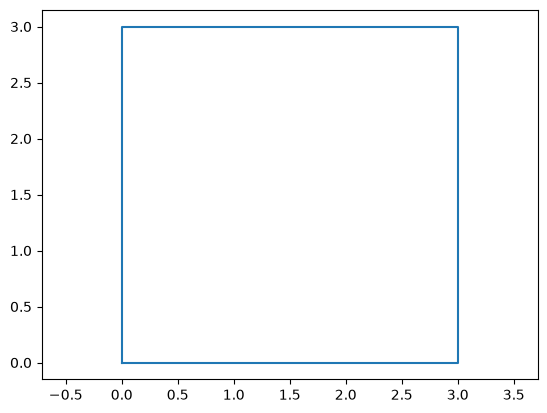
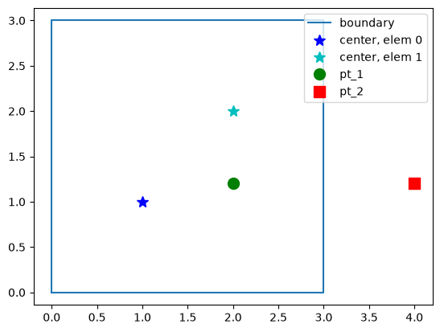
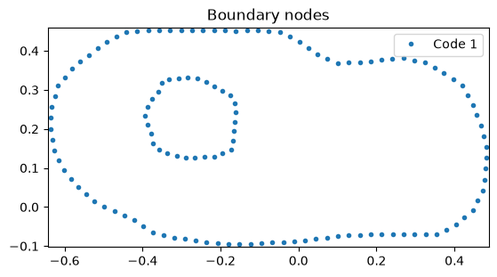
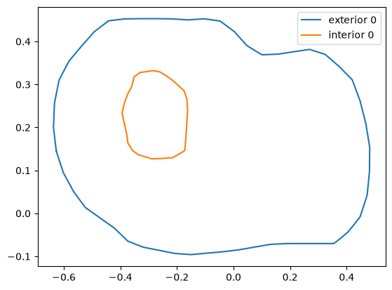
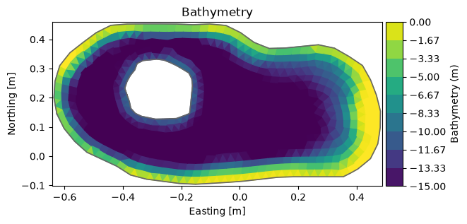

Mesh#
See Mesh in MIKE IO Documentation
import numpy as np
import matplotlib.pyplot as plt
import mikeio
A simple mesh#
Let’s consider a simple mesh consisting of 2 triangular elements.
Note
Example data can be found in the mini_book/data folder in this zip-file.
fn = "data/two_elements.mesh"
with open(fn, "r") as f:
print(f.read())
100079 1000 4 UTM-31
1 0.0 0.0 -10.0 1
2 3.0 0.0 -10.0 2
3 3.0 3.0 -10.0 2
4 0.0 3.0 -10.0 1
2 3 21
1 1 2 4
2 2 3 4
msh = mikeio.open(fn)
msh
<Mesh>
number of nodes: 4
number of elements: 2
projection: UTM-31
msh.plot(show_mesh=True);
msh.node_coordinates
array([[ 0., 0., -10.],
[ 3., 0., -10.],
[ 3., 3., -10.],
[ 0., 3., -10.]])
msh.element_table
[array([0, 1, 3], dtype=int32), array([1, 2, 3], dtype=int32)]
msh.element_coordinates
array([[ 1., 1., -10.],
[ 2., 2., -10.]])
msh.geometry.get_element_area()
array([4.5, 4.5])
Let’s plot the node and element coordinates:
xn, yn = msh.node_coordinates[:,0], msh.node_coordinates[:,1]
xe, ye = msh.element_coordinates[:,0], msh.element_coordinates[:,1]
ax = msh.plot(show_mesh=True)
ax.plot(xn, yn, 'ro', markersize=10)
ax.plot(xe, ye, 'bx', markersize=10)
[<matplotlib.lines.Line2D at 0x7f9b63f2c2d0>]

Boundary polygons#
It can sometimes be convenient to have mesh boundary as a polygon (or multiple in case of more complex meshes).
bxy = msh.geometry.boundary_polygons.exteriors[0].xy
plt.plot(bxy[:,0], bxy[:,1])
plt.axis("equal");

Inside domain?#
MIKE IO has a method for determining if a point (or a list of points) is inside the domain:
contains()
pt_1 = [2.0, 1.2]
msh.geometry.contains(pt_1)[0]
np.True_
# or multiple points at the same time
pt_2 = [4.0, 1.2]
pts = np.array([pt_1, pt_2])
msh.geometry.contains(pts)
array([ True, False])
plt.plot(bxy[:,0], bxy[:,1], label='boundary')
plt.plot(xe[0], ye[0], 'b*', markersize=10, label="center, elem 0")
plt.plot(xe[1], ye[1], 'c*', markersize=10, label="center, elem 1")
plt.plot(*pt_1, 'go', markersize=10, label="pt_1")
plt.plot(*pt_2, 'rs', markersize=10, label="pt_2")
plt.axis("equal")
plt.legend(loc="upper right");

Find element containing point#
MIKE IO has a method for obtaining the index of the element containing a point:
find_index()
g = msh.geometry
g.find_index(coords=pt_1)[0]
np.int64(1)
MIKE IO also has a method for obtaining a list of the n closest element centers:
find_nearest_elements()
g.find_nearest_elements(pt_1)
np.int64(1)
g.find_nearest_elements(pt_1, return_distances=True)
(np.int64(1), 0.8)
g.find_nearest_elements(pt_1, n_nearest=2)
array([1, 0])
# for multiple points
g.find_nearest_elements(pts, return_distances=True)
(array([1, 1]), array([0.8 , 2.15406592]))
A larger mesh#
A dfsu file also has a flexible mesh geometry attribute.
fn = "data/FakeLake.dfsu"
dfs = mikeio.open(fn)
g = dfs.geometry
g.plot();

g.max_nodes_per_element
4
g.plot.boundary_nodes();

bnd = g.boundary_polygons
ext0 = bnd.exteriors[0]
plt.plot(ext0.xy[:,0], ext0.xy[:,1], label='exterior 0')
int0 = bnd.interiors[0]
plt.plot(int0.xy[:,0], int0.xy[:,1], label='interior 0')
plt.legend();

Change depth#
# zn == nodes, not elements!
nc = g.node_coordinates
nc[:,2] = np.clip(nc[:,2], -15, 0) # clip depth to interval [-15,0]
Element coordinates are cached, delete to force recalculation
del g.element_coordinates
g.plot();

g.to_mesh('Fake_lake_clip15.mesh') # save to a new file
See the MIKE IO Mesh Example notebook for more Mesh operations (including shapely operations).